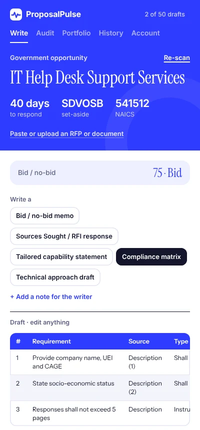

Write the proposal while the job is still fresh.
ProposalPulse reads the Upwork job, LinkedIn profile, email or government solicitation you have open, then drafts a reply built from your real past work.
A Chrome extension. Free plan includes 10 drafts a month. No card needed.
Three taps from job post to sent.
It works inside the sites you already use, so there's nothing to copy and paste between tabs.
Open the opportunity
An Upwork job, a LinkedIn profile, an email thread or a SAM.gov notice. A Match badge appears next to the main button with a quick fit score.
Check if it's worth it
The Audit tab flags risky clients, ineligible set-asides and tight deadlines, and suggests a rate, before you spend time writing.
Write, then send
Tap once and the draft streams in. Edit anything, then copy it or insert it straight into the page.
One assistant for every place you pitch.
Upwork
Reads the job and the client's history: spend, hire rate, payment status.
Writes proposals
Picks up the person's role, company and background from their profile.
Writes connection notes and DMs
Gmail
Reads the thread you're in, only when you ask it to.
Writes replies
Government
SAM.gov notices, or any RFP you upload as a PDF or Word file.
Writes RFI responses, matrices and more
Built for small government contractors, too.
Upload a solicitation or open a SAM.gov notice. ProposalPulse checks whether you're eligible, then does the heavy first pass for you.
- Bid or no-bid score from set-aside, NAICS and deadline
- Compliance matrix you can paste straight into a spreadsheet
- Sources Sought and RFI responses
- Capability statements tailored to the agency
- Technical approach drafts that follow Sections L and M

It only cites results you've actually delivered. If you haven't added a case study, it won't invent one.
You add your skills, past projects and testimonials once. Every draft is built from them and written in your voice, with the phrases you hate left out.
Simple pricing. Cancel anytime.
Start free. Upgrade when it's winning you work.
Free
$0
To try everything, government tools included.
- 10 drafts a month
- Every feature
- Client audit and rate advice
Solo
$19 / month
For freelancers pitching on Upwork, LinkedIn and email.
- 150 drafts a month
- Upwork, LinkedIn and Gmail
- Client audit and rate advice
- Draft history with win tracking
Pro
$49 / month
For agencies and businesses bidding on contracts.
- 600 drafts a month
- Everything in Solo
- Full government contracting suite
- RFP uploads up to about 100 pages
Prices in US dollars. Payments are handled securely by Lemon Squeezy, our reseller and merchant of record. See our refund policy.
Questions
Does it send proposals for me?
No. ProposalPulse writes a draft; you review it and choose to send it. It never submits anything or clicks buttons on your behalf.
What does it read on the page?
Only the opportunity you're looking at, such as the job description and client details, or the profile you're viewing. Gmail and other sites are read only when you click to capture them. See the privacy policy for details.
Are my uploaded RFPs stored?
Uploaded files are turned into text on your own computer. The file itself is never uploaded; only the text needed for a draft is sent to generate it, and it isn't kept afterwards.
How do I sign in?
With your Google account. There's no password to create.
Can I cancel?
Yes, anytime. Your plan stays active until the end of the period you've paid for.